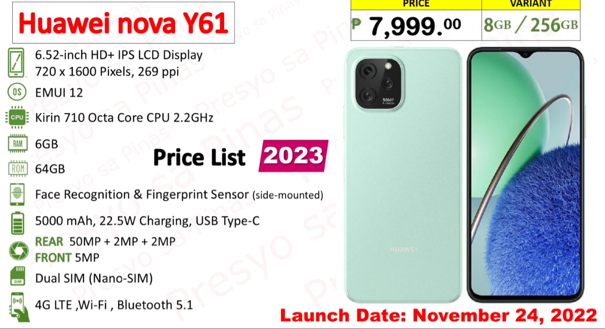
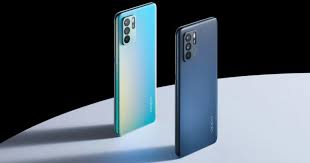

Sumsung
Techno
vivo

Infinix
Huawei

Mobile devices, such as smartphones and tablets, have become an integral part of our daily lives, revolutionizing the way we communicate, work, shop, and consume content. The rise of mobile technology has led to a significant shift in consumer behavior, with more people accessing the internet and engaging with brands through their mobile devices than ever before. As a result, businesses are increasingly focusing on mobile marketing strategies to reach and engage with their target audience. The mobile market is constantly evolving, with new devices, operating systems, and apps being introduced regularly. This dynamic landscape presents both opportunities and challenges for businesses looking to leverage mobile marketing to grow their online presence and drive sales. To succeed in the mobile market, businesses need to stay up-to-date with the latest trends and technologies, understand their target audience's mobile usage habits, and tailor their marketing strategies accordingly.

One of the key advantages of mobile marketing is its ability to reach consumers on the go, allowing businesses to connect with their audience at any time and place. Mobile marketing tactics such as SMS marketing, mobile apps, and mobile-optimized websites can help businesses engage with customers in a more personalized and interactive way, driving brand awareness and customer loyalty. Additionally, mobile marketing offers valuable data insights that can help businesses track and measure the effectiveness of their campaigns, enabling them to make data-driven decisions to optimize their marketing efforts.
In today's competitive online landscape, having a strong mobile marketing strategy is essential for businesses looking to stay ahead of the curve and reach their target audience effectively. With the majority of internet users now accessing the web through their mobile devices, businesses that fail to prioritize mobile marketing risk missing out on valuable opportunities to connect with potential customers and drive conversions. By investing in mobile marketing tactics that resonate with their target audience and align with their overall business goals, businesses can establish a strong online presence and drive sustainable growth in the ever-evolving mobile market.
In conclusion, mobile devices have become a central tool for consumers to access information, shop, and interact with brands online.
The mobile market continues to grow and evolve rapidly, presenting both challenges and opportunities for businesses looking to capitalize on this trend. By understanding the importance of mobile marketing, staying informed about the latest trends and technologies, and implementing effective mobile marketing strategies, businesses can effectively engage with their target audience, drive brand awareness, and achieve their online marketing goals in today's mobile-centric world.